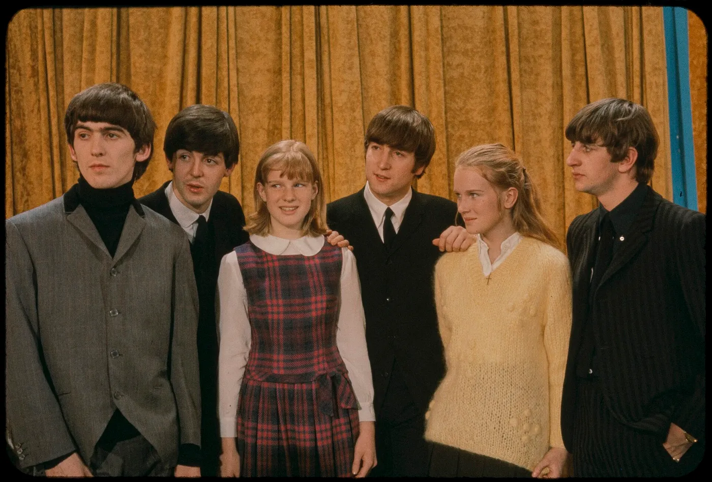

Beatlemania 1962–1965

The Beatles' first single, "Love Me Do," came out in October 1962. Within a year, fans in Britain were mobbing them everywhere they went, and the press called it Beatlemania.
In February 1964 they flew to New York. Their first appearance on The Ed Sullivan Show was watched by about 73 million people, and America caught it too.